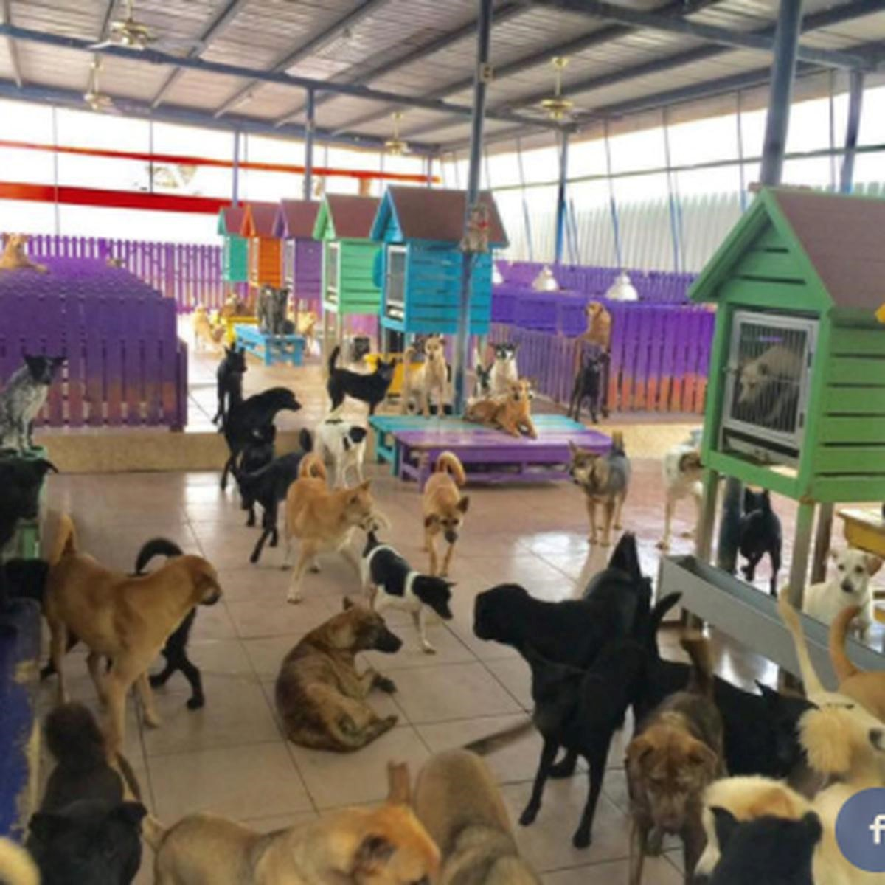

¿QUIENES SOMOS?
Somos una red de adopción de animales sin hogar, abandonados o entregados por personas que no pueden tener
mascotas, para así buscarles un hogar una familia y un hogar digno.
Principalente buscamos perfiles de personas muy responsables y de buen corazón que quiera adoptar una mascota
y darle el amor, la alimentación y el estilo de vida que se merecen, tambien hacemos concientizar a las personas
sobre los valores como el respeto, la responsabilidad y la empatia en como puede llegar a sentirse un animal al
ser abandonado en la calle y quedar en un estado deplorable, con una alimentación lamentable.
Promovemos la protección y el bienestar de los animales mediante acciones directas y la concienciación de la
comunidad en el respeto que merecen y se debe tener hacia las demás especies.